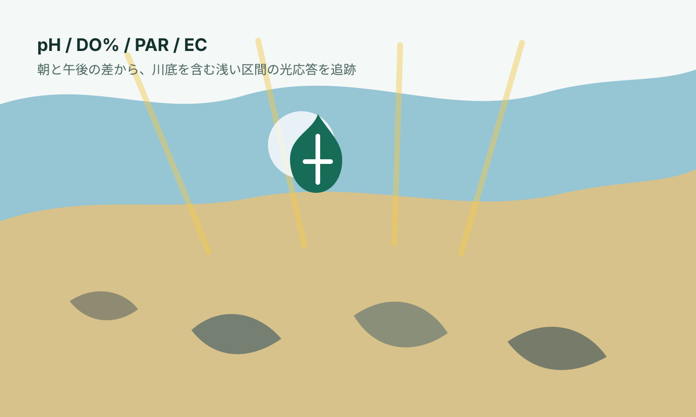

朝と午後の差
pH と DO% の朝午後差を、日中の光応答 proxy として見ます。DO%は流れや再曝気の影響も受けるため、pHや光と合わせて読みます。
Open river observation dataset
朝と午後の pH / DO% / 光 / 写真から見る、川底バイオフィルムを含む浅い河川区間の非破壊モニタリング
大栗川の同じ浅い区間で、朝と午後に pH、DO%、光量、写真を記録しています。朝から午後に pH や DO% がどれだけ上がるかを見ることで、川底の藻類・微生物膜を含む環境が、その日の光にどれくらい反応しているかを追跡しています。

What this shows
雨や濁りで川底の状態が変わったあと、光が戻ったときに pH / DO% の日中応答がすぐ戻るのか、それとも数日遅れて戻るのかを見ます。
pH と DO% の朝午後差を、日中の光応答 proxy として見ます。DO%は流れや再曝気の影響も受けるため、pHや光と合わせて読みます。
PAR と川底光到達率から、応答が弱い理由が光不足なのか、光はあるのに川底側の応答が弱いのかを分けます。
泥、裸石感、藻類っぽさ、ECの変化を合わせ、遮光型、洗い流し型、化学・流入イベント候補を分けて読みます。
Main signal
川底を含む浅い区間が、その日の光にどれくらい反応したかを見る主グラフです。
delta_pH = pH_afternoon - pH_morningdelta_DO_pct = DO_pct_afternoon - DO_pct_morning
Light environment
光が少ない日は pH や DO% の上昇が小さくても自然です。重要なのは、光が戻った日でも応答が弱いかどうかです。
Riverbed state
写真スコアは主観的な指標ですが、同じ基準で毎日つけることで、雨後に泥が増えたのか、石が洗われたのか、水が澄んだのかを追いやすくなります。
Same brightness comparison
横軸は川底に届いた光、縦軸は朝午後差です。同じくらい明るい日でも雨後直後の点が下側に集まるなら、光は戻っていても応答がまだ弱い可能性があります。
Rain and event reading
雨後の変化は「雨の影響」とまとめず、洗い流し型、遮光型、化学・流入イベント候補に分けて読みます。
EC check
ECは水に溶けているイオンの多さの目安です。雨水希釈や側溝・排水など、光や泥だけでは説明しにくい日を探します。
Intraday reference
other セッションを含む日だけを対象に、1日の中での pH、DO%、光、EC の動きを複数グラフで並べます。
| 時刻 | session | pH | DO | PAR | 状態 |
|---|
Data table
朝午後差分を中心にした公開用の派生データです。欠測や poor は通常データと分けて読んでください。
| 日付 | イベント | pH日中上昇 | DO%日中上昇 | 川底PAR | 川底光到達率 | EC変化 | 川底状態 | メモ |
|---|
| 日時 | session | pH | DO | PAR | 状態 |
|---|
Method and limits
この観察では、石を採取したり、川に機材を設置したりせず、同じ河川区間で朝と午後の水質・光・写真を記録しています。個別の石ではなく、同じ画角の川底パッチ全体を観察単位にしています。
朝は夜間の呼吸後に近い状態、午後は日中の光を受けた後の状態です。この2回の差を見ることで、正式な河川代謝推定ではありませんが、日中の光応答の手がかりを得ます。
Downloads